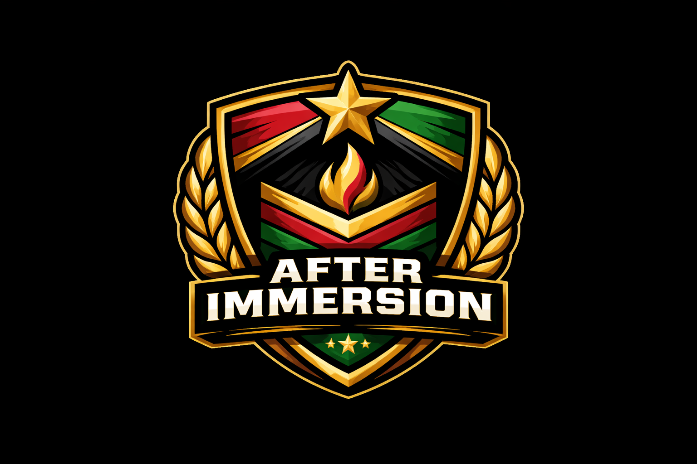
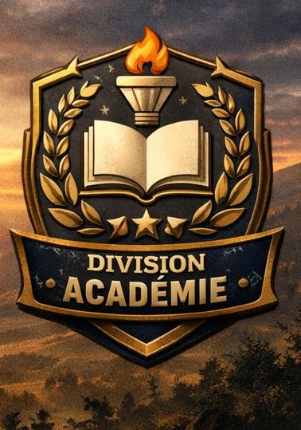
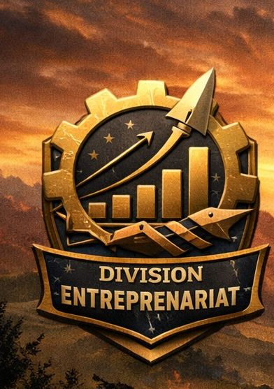
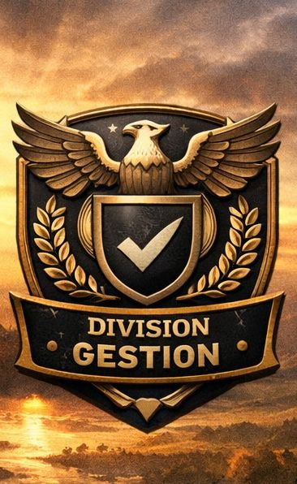
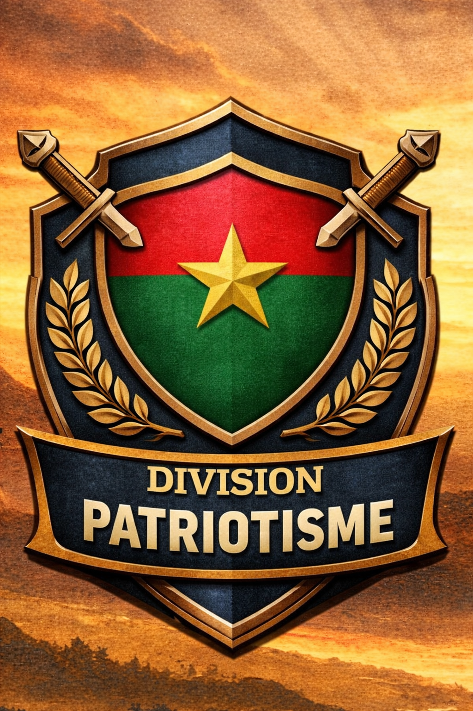

NOUS SOMMES ENGAGÉS POUR LA PATRIE
Discipline • Ordre • Développement
Presentation





👉 Histoire derrière la création de After immersion game
Tout d'abord nos remerciments vont à l'endroit de nos autorités ,
qui grace à leurs abnegation et leurs patriotisme ont intituer cette belle
initiative qu'est l'immersion patriotique.
1️⃣ After Immersion Game est né d’une conviction simple :
l’immersion patriotique ne doit pas s’arrêter à la sortie du centre.
Passionné d’entrepreneuriat malgré plusieurs échecs, j’attendais avec impatience la formation sur l'entrepreneuriat reçue durant notre séjour.
Ce jour-là, quelque chose a changé. Une idée est née : continuer à entreprendre, ensemble, après l’immersion.
En discutant avec mes camarades, nous avons rapidement compris que nous partagions la même ambition.
Nous avons alors formé un comité avec un objectif clair :
Encourager l’entrepreneuriat des immergés et des jeunes diplômés dans le but de renforcer l'esprit patriotique .
Mettre en place des mécanismes de financement , de formation , et d'accompagnement
Travailler collectivement sur des projets concrets
Promouvoir l’engagement patriotique et le bénévolat
Avec le soutien de notre encadrement, nous avons présenté cette vision à nos camarades caserner.
L’adhésion de nos cammarades fut immédiate , certains affirmait : c'est l'une des meilleures choses que l'immersion patriotique à fait naitre .
After Immersion Game n’est pas le projet d’une seule personne.
C’est une initiative collective portée par des jeunes déterminés à transformer la discipline acquise en impact réel pour notre pays .
Parce que l’immersion ne se termine pas.
Elle continue… et elle construit.
🎯 Missions
1️⃣ Créer et developper des entreprises modernes et innovantes
2️⃣ Créer un environnement comunautaire centrer sur
le patriotisme et le developpement
3️⃣ Faire vivre l'esprit de l'immersion
patriotique au dela des centres de formations
🪖 Grades internes au jeux
1️⃣ Officiers
2️⃣ Sous officiers
3️⃣ Soldats
4️⃣ Recrues
🧠 Commandement et organisation
👉 COMMANDEMENT
I°) le commendement central/Etat major , coordonne
le programme au niveau national
II°) Le commandement regional , agit au niveau Régional
III°) Détachement de moyenne taille , s'execute au niveau local
IV°) Unités spéciaux (univertés, lycées, collèges , autres...)
VI) Des unités dédiés à des domaines bien précis (agriculture , informatique ,Ingénierie....)
👉 Organisation
✅ Nous sommes une communautée bien organiser et structurer
, afin d'atteindre nos objectifs nous utilisons des outils digitaux :
*Le site web After immersion Game
* Zoom
* watsapp
* plateforme d'elearning pro
*Google workspace
✅ Décisions et actions se font uniquement par consentement et participation de tous , et cela en restant dans la légalité .
✅ Responsabilisation de tous les menbres grace a une repartion des roles bien concise et precise.
Nos Partenaires